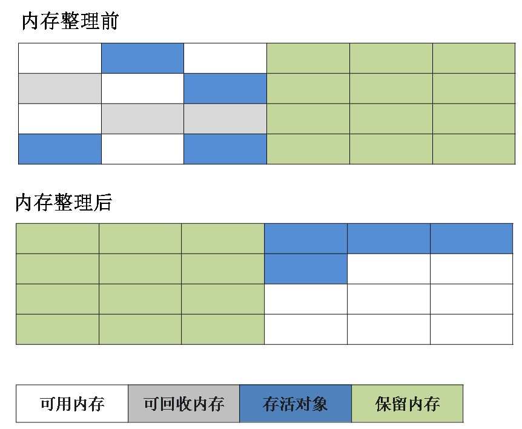
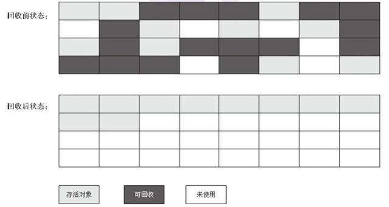

- 1. JDK发展小结
- 2.内存区域与内存溢出溢出
- 3.垃圾收集器与内存分配策略
1. JDK发展小结
- JDK1.0 ：提供纯解释虚拟机Sun Classic VM、Applet、AWT等。
- JDK1. 1：JAR文件格式，JDBC，JavaBeans、RMI等,，提出内部类(Inner Class)和反射(Reflection)等语法。
- JDK1.2：开始分化为三个方向：J2SE（面向桌面级应用）、J2EE（面向企业级开发）、J2ME（面向手机等移动端）；第一次内置了JIT（Just In Time）即时编译器，添加了strictfp关键字，添加了Collections集合类等。
- JDK1.3: 新增各种类库（Timer API），JNDI开始作为平台级服务提供，大量类
- JDK1.4：开始成熟
- JDK5: 不在使用1.X命名，极大改语法自动装箱，泛型，动态注解，枚举等，
2.内存区域与内存溢出溢出
2.1 java各内存区域介绍
java虚拟机会在执行Java程序的时候将它管理的内存划分为如图所示的几个数据区域，它们各有各的用途，一些区域随着虚拟机的启动一直存在，一些区域则依赖用户线程的启动和结束而建立与销毁。
以下是JDK1.8之前的图

JDK1.8及之后的

程序计数器（Program Counter Register）：是一块内存较小的内存空间，视作当前线程所执行字节码的行号指示器。java虚拟机概念模型里的字节码指示器通过改变这个计数器的值来选取下一条要执行的字节码指令。
JVM中的多线程是通过线程轮流切换、分配处理器执行时间的方式实现，任何确定时刻一个处理器(内核)都会执行一条线程指令。因此每个线程都有自己独立的程序计数器，为线程私有。
如果线程执行的是一个java方法，此计数器记录的是正在执行的虚拟机字节码指令的地址；如果执行的是本地（Native方法），计数器值则为空（Undefine）。这里不会出现OutOfMemoryError.
本地方法：其它语言编写的方法，如HashMap底层的某些实现函数。
java方法：java语言编写的方法
Java 虚拟机栈（Java Virtual Machine Stack）：线程私有，生命周期和线程一致。描述了java方法执行的线程内存模型，每个方法在被执行的时候JVM都会同步创建一个帧栈（Stack frame）用于存放局部变量表，操作数栈，动态连接，方法出口等信息，每个方法要被调用到被执行完毕，就对应其中的一个帧从入栈到出栈font>。
局部变量表：存放编译期可知的各种基本数据类型，对象引用和returnAddress类型(指向一条字节码指令地址)。他们在局部变量表里以局部变量槽（Slot）来表示，64位长度的数据（long和double）会占用两个变量槽，其余则占用一个。其所需内存空间在编译期间就完成分配，进入一个方法时，在该方法的运行期间是不会改变局部变量表的大小的。
会出现的两类异常：
- 如果线程请求的栈深度大于虚拟机允许的深度，抛出
StackOverflowError; - 如果JVM栈容量可以动态扩展，当无法申请到足够内存时就抛出
OutOfMemoryError。
- 如果线程请求的栈深度大于虚拟机允许的深度，抛出
本地方法栈（Native Method Stacks）：线程私有，作用与虚拟机栈相似，虚拟机栈为虚拟机执行Java方法（字节码）服务，本地方法栈则为虚拟机使用到的本地方法服务。
该栈中的实现语言没有限制。根据需要自由实现，有的java虚拟机（HotSpot）直接把本地方法栈和虚拟机栈合二为一。也存在
StackOverflowError和OutOfMemoryError异常。Java堆（Java Heap）：内存最大的一块，所有线程共享。虚拟机启动时创建，目的就是存放对象实例和数组，受到垃圾收集器管理，故也被称为（GC堆）。而java堆中又可以划分出多个线程私有的分配缓存冲区（Thread Local Alloction Buffer， TLAB）来提升对象分配时的效率。该区域只能存储对象的实例。堆的物理内存空间可以是不连续的，但逻辑上必须是连续的。他可以被设定成固定大小，也可以是可扩展(大部分)的，无法继续扩展时会跑出
OutOfMemoryError异常。垃圾收集器大都基于分代收集理论设计，因此。有“新生代”，“老年代”，“永久代”，“Eden空间”，“Survior”……
方法区（Method Area）：线程共享，用于存储已被虚拟机加载的类型信息、常量、静态变量、即时编译器编译后的代码缓存等数据。《java虚拟机规范》中描述为堆的一个逻辑部分，别名Non-heap。JDK8开始完全放弃永久代实现方法区，使用本地内存实现。方法区可以选择不实现垃圾收集，方法区的垃圾收集目标主要为常量池的回收和对类型的卸载。
- 运行时常量池（Runtime Constant Pool）：属于方法区，Class文件中的常量池表（Constant Pool Table），用于存放编译器生成的各种字面量与符号引用，这部分内容将在类加载后存放到方法区的运行时常量池中。与Class文件常量池相比具有动态性，在运行期间也能将新的常量放进去，比如String类
inern()方法当其无法申请到内存的时候也会报OutOfMemoryError异常。
- 运行时常量池（Runtime Constant Pool）：属于方法区，Class文件中的常量池表（Constant Pool Table），用于存放编译器生成的各种字面量与符号引用，这部分内容将在类加载后存放到方法区的运行时常量池中。与Class文件常量池相比具有动态性，在运行期间也能将新的常量放进去，比如String类
直接内存（Direct Memory）：它不属于java运行时数据区的一部分，但被频繁使用也可导致
OutOfMemoryError异常，原因是JDK1.4新加入的NIO（New Input/Output）类，引入基于通道（Channel）与缓冲区（BUffer）的I/O方式，使用Native函数库直接分配堆外内存，使用java堆中的DirectByteBuffer对象作为这块内存的引用来操作，避免了java堆与native堆中来回复制数据操作，但分配如果考虑不周全可能导致动态扩展OutOfMemoryError异常。
2.2 HotSpot虚拟机对象
2.2.1对象创建
当java虚拟机遇到一条字节码new指令时，首先检查这个指令的参数是否能在常量池中定位到一个类的符号引用，并且检查这个符号引用代表的类是否已被加载、解析和初始化过。如果没有则必须先执行相应的类加载过程，类加载检查通过之后，虚拟机会为新生对象分配内存，此时内存大小已经确定。内存分配完后虚拟机必须将分配好的空间做默认值初始化操作，初始化操作完后还需要对对象进行必要的设置（如该对象是哪个类的实例，对象的哈希码，对象的GC分代龄信息等），紧接着还需要执行<init()>方法，按照程序员的意愿初始化该对象，此时对象创建才结束。

为对象分配内存的方式：
- 指针碰撞：假设java堆中内存绝对规整买一边是使用过的，一边是没使用过的，中间隔着一个指针，分配内存时指针就从使用过的区域向未使用过的区域移动对象大小相等的距离，这种方法就是指针碰撞（Bump The Pointer）。
- 空闲列表：假如堆中的内存不规整，则需要虚拟机维护一个列表，用来记录哪些内存块是可用的，分配时寻找可以分配给对象的空间，并更新列表上的记录，就称为“空闲列表”分配。
采用哪种分配方式由java堆是否规整决定，这一条件又由垃圾收集器是否带有空间压缩整理(Compat)的能力决定。
如何解决并发下对象创建的线程安全问题？
- 对分配内存空间的动作做同步处理，虚拟机实际使用CAS配上失败重试机制保证更新操作的原子性；
- 把内存分配的动作按照线程划分在不同的空间之中进行，即每个线程在java堆中预先分配一小块内存，叫做本地线程分配缓冲（Thread Local Alloction Buffer， TLAB），只用该线程的本地缓存区用完了，分配新的缓冲区时才需要锁定
2.2.2 对象的内存布局
HotSpot虚拟机对对象在堆内的存储布局可分为：
对象头（Header）：包括两类信息，一类是用于存储对象自身的运行时数据，如哈希码（hashcode），GC分代年龄，锁状态标志，线程持有的锁，偏向线程ID，偏向时间戳等，这些数据长度由虚拟机的位数决定（32比特或64比特），称为“Mark Word”。另一类是类型指针，即对象指向它的类型原数据指针，用来确定该对象是哪个类的实例。若对象是数组，则还必须有一块记录数组长度的数据。
实例数据：存储代码中定义的各种类型的字段内容，包括继承自父类以及子类定义的字段。
分配顺序依次为：long/doubles, ints, shorts,/chars,byte/booleans,oops(Ordinary Object Pointers, OOPs),相同宽度字段一起存放。
对齐填充：并不必然存在，仅其占位符作用。任何对象的大小都必须是8字节的整数倍，不满足则使用对齐填充来补全。

2.2.3 对象访问定位
java程序通过栈上的reference数据来操作堆上的具体对象，对象访问方式由虚拟机实现。
- 使用句柄访问：java堆中会划分一块内存来作为句柄池，reference存储的就是对象的句柄地址，句柄包含对象实例数据与类型数据各自的具体地址信息。
- 使用直接指针访问：reference中存储的就是直接是对象的地址，访问对象就不需要间接访问开销。
使用句柄访问好处是reference存储的内容稳定句柄地址，对象移动时也只改变句柄中的实例数据指针，reference本身不修改。
使用直接指针访问好处就是速度快。

2.2.4 堆溢出
堆用于存储对象的实例，只要不断的创建对象，并且避免垃圾回收清除这些对象，总容量触及堆设定的最大容量后就会产生内存溢出异常OutOfMemoryError。假如堆可动态扩展，当扩展无法申请到足够的内存时也会报该异常。
测试代码：启动参数设置：-Xms20m -Xmx20m
1 | public class demo { |
1 | Exception in thread "main" java.lang.OutOfMemoryError: Java heap space |
参数：-XX:+HeapDumpOnOutOfMemoryError可以让虚拟机出现内存溢出异常的时候Dump出当前内存对转存储快照以便时候分析。分析时需要弄清是内存泄漏（Memory Leak）还是内存溢出(Memory Overflow)。
2.2.5 虚拟机栈和本地方法栈溢出
HotSpot不区分虚拟机栈和本地方法栈，因此对其 -Xoss参数无效，栈容量由-Xss参数设定，这两个地方有两种异常：
- 如果线程请求的栈深度大于虚拟机允许的最大深度，抛出
StackOverflowError异常。 - 如果虚拟机的栈内存允许动态扩展（HotSpot不支持），当扩展栈容量无法申请到足够的内存时，将抛出
OutOfMemoryError异常。
当虚拟机不支持栈内存动态扩展时，线程在运行时不会因为扩展而导致内存溢出，，只会因为栈容量无法容纳新的栈帧而导致StackOverflowError异常。
2.2.6 方法区和运行时常量池溢出
JDK8中完全使用元空间来代替永久代，在JDK6或之前的HotSpot虚拟机中，常量池都是分配在永久代中，此版本出现运行时常量池溢出时会抛出OutOfMemoryError异常后面会跟“PermGenspace”。JDK7或更高的版本中不会出现前述溢出异常，无论怎样限制常量池容量和方法区容量，而限制栈内存大小可以出现OOM。因为JDK7开始放在永久代的字符串常量池就移至java堆当中。
1 | public class demo { |
上述代码执行结果：
JDK6：两个false，因为StringBuilder创建的对象在堆上，调用intern()方法会把首次遇到的字符串实例复制到永久代的字符串常量池中，返回永久代里的字符串实例引用，因此二者不同，
JDK7：true false。原因：此版本intern()方法实现不再需要拷贝字符串的实例到永久代，常量池已经移动到java堆上，只需要在常量池中记录首次出现的实例的引用，因此对于str1输出是true。str2的输出是false是因为”java“这个字符串在执行StringBuilder.toString()就已经出现了，不符合intern()方法的首次遇到原则。
方法区其它内容包括了类名，访问修饰符，常量池，字段描述，方法描述等。
2.2.7 本机直接内存溢出
本机直接内存可用-XX:MaxDirectMemorySize指定，默认与java堆大小一致。该内存溢出的特征是在Heap Dump文件中看不到明显异常情况。
3.垃圾收集器与内存分配策略
3.1简介
垃圾收集器（Garbage Collection ，GC）。java堆和方法区有很显著的不确定性：一个接口的 多个实现类需要的内存可能会不一样，一个方法所执行的不同条件分支所需要的内存也可能不一样，只有在程序运行期间我们才能知道究竟有哪些对象会被创建，创建多少个对象，这部分内存的分配与回收就是动态的。GC负责的就是这部分内存的管理。
3.2 怎样确定对象已经死亡？
3.2.1引用计数法
原理：在对象中添加一个引用计数器，每当以一个地方引用它，计数器就加一；当引用失效时，计数器就减一，任何时候计数器为零的对象就是不可能再被使用的对象。
特点：原理简单，判定效率高，但不适用于java中，需要考虑大量的例外情况。例如很难解决对象之间循环引用的问题。
3.2.2 可达性分析算法
可达性分析算法（Reachability Analysis）应用多种主流商用程序语言的内存管理系统。
算法思路：通过一系列“”GC Roots”的根对象作为起始节点集，从这些节点开始，根据引用关系向下搜索，搜索过程所走过的路径就称为”引用链“（Reference Chain）,如果某个对象到GC Roots 间没有任何引用链，或者说它们之间不可达，则证明该对象不可能再被使用。

GC roots对象种类如下：
- 在虚拟机栈（栈帧中的本地变量表）中引用的对象，如各个线程被调用的方法堆栈中使用到的参数、局部变量、临时变量等。
- 方法区中静态属性引用的对象，如java类的引用类型静态变量。
- 方法区中常量应用的对象，如字符串常量池（String Table）里的引用。
- 在本地方法栈中JNI（Native方法）引用的对象。
- java虚拟机内部的引用，如基本数据类型对应的Class对象，一些常驻的异常对象（NullPointException, OutOfMemoryError）,以及系统类加载器。
- 所有被同步锁（synchronized关键字）持有的对象。
- JMXbean，JVMTI中注册的回调，本地代码缓存等。
3.3 引用
JDK1.2之前：引用就是指：如果reference类型的数据中存储的数值代表的是另一块内存的起始地址，就称该reference数据是代表某块内存，某个对象的引用。（较狭隘）
JDK1.2之后;
- 强引用（Strongly Reference）：相当于传统的定义，就是指引用赋值的关系，如“Object object = new Object();”这种。只要强引用关系存在，GC就永远不会回收被引用的对象。
- 软引用（Soft Reference）：描述一些还有用，但是非必须的对象。只被软引用关联的对象，在系统将发生内存溢出异常前，会把这些对象列入回收范围之中进行第二次回收，若这次回收还没有足够内存则抛出内存溢出异常。（SoftReference类）软引用可用来实现内存敏感的高速缓存。
- 弱引用（Weak Reference）：也描述那些非必须对象，强度比软引用更弱一些，只能活到下一次垃圾收集发生为止。当GC开始工作，无论此时内存是否足够，都会回收只被弱引用关联的对象。WeakReference类）
- 虚引用（Phantom Reference）:幽灵引用或虚幻引用，最弱的引用关系，不会对该对象的生成时间构成影响，也无法通过它访问一个对象实例。其目的在于该对象字啊被垃圾收集器回收之前收到一个系统通知。
虚引用与软引用和弱引用的一个区别在于： 虚引用必须和引用队列（ReferenceQueue）联合使用。当垃圾回收器准备回收一个对象时，如果发现它还有虚引用，就会在回收对象的内存之前，把这个虚引用加入到与之关联的引用队列中。程序可以通过判断引用队列中是否已经加入了虚引用，来了解被引用的对象是否将要被垃圾回收。程序如果发现某个虚引用已经被加入到引用队列，那么就可以在所引用的对象的内存被回收之前采取必要的行动。
3.4 不可达的对象并非“非死不可”
即使在可达性分析法中不可达的对象，也并非是“非死不可”的，这时候它们暂时处于“缓刑阶段”，要真正宣告一个对象死亡，至少要经历两次标记过程；
- 可达性分析法中不可达的对象被第一次标记并且进行一次筛选，筛选的条件是此对象是否有必要执行 finalize 方法。当对象没有覆盖 finalize 方法，或 finalize 方法已经被虚拟机调用过时，虚拟机将这两种情况视为没有必要执行。
- 被判定为需要执行的对象将会被放在一个队列中进行第二次标记，除非这个对象与引用链上的任何一个对象建立关联，否则就会被真的回收。
3.5 如何判断一个常量是废弃常量？
方法区的垃圾回收主要收两部分内容，一是废弃的常量，二是不再使用的类型。
假如在字符串常量池中存在字符串 “abc”，如果当前没有任何 String 对象引用该字符串常量的话，就说明常量 “abc” 就是废弃常量，如果这时发生内存回收，垃圾收集器认为有必要的话，”abc” 就会被系统清理出常量池了。
- JDK1.7 之前运行时常量池逻辑包含字符串常量池存放在方法区, 此时 hotspot 虚拟机对方法区的实现为永久代
- JDK1.7 字符串常量池被从方法区拿到了堆中, 这里没有提到运行时常量池,也就是说字符串常量池被单独拿到堆,运行时常量池剩下的东西还在方法区, 也就是 hotspot 中的永久代 。
- JDK1.8 hotspot 移除了永久代用元空间(Metaspace)取而代之, 这时候字符串常量池还在堆, 运行时常量池还在方法区, 只不过方法区的实现从永久代变成了元空间(Metaspace)
3.6 如何判断一个类是不再被使用的类
方法区主要回收的是无用的类。
需要同时满足下面 3 个条件才能算是 “不再被使用的类” ：
- 该类所有的实例都已经被回收，也就是 Java 堆中不存在该类的任何实例。
- 加载该类的
ClassLoader已经被回收。 - 该类对应的
java.lang.Class对象没有在任何地方被引用，无法在任何地方通过反射访问该类的方法。
虚拟机可以对满足上述 3 个条件的无用类进行回收，这里说的仅仅是“可以”，而并不是和对象一样不使用了就会必然被回收。
3.7 垃圾收集算法
主要分为两大类：“引用计数式垃圾收集”（Reference Counting GC）和“追踪式垃圾收集”（Tracing GC）。也称“直接垃圾收集”和“间接垃圾收集”，java主要使用后者。
3.7.1标记-清除算法
该算法分为“标记”和“清除”阶段：首先标记出所有不需要回收的对象，在标记完成后统一回收掉所有没有被标记的对象。它是最基础的收集算法，后续的算法都是对其不足进行改进得到。这种垃圾收集算法会带来两个明显的问题：
- 执行效率不稳定，标记和清除的效率随标记对象的数量增长而降低。
- 内存空间的碎片化问题。由标记清楚之后产生大量不连续的内存碎片引发。之后可因无法找到足够大的内存空间去分配而多次引发垃圾收集操作。

3.7.2 标记-复制算法
简称“复制算法”，为解决前者效率问题，它可以将内存分为大小相同的两块，每次使用其中的一块。当这一块的内存使用完后，就将还存活的对象复制到另一块去，然后再把使用的空间一次清理掉。这样就使每次的内存回收都是对内存区间的一半进行回收。
缺点：若内存中的多数对象都是活的，则产生大量复制开销，且将内存空间缩小了一半，浪费！

3.7.3 标记-整理算法
根据老年代的特点提出的一种标记算法，标记过程仍然与“标记-清除”算法一样，但后续步骤不是直接对可回收对象回收，而是让所有存活的对象向一端移动，然后直接清理掉端边界以外的内存。
缺点：如果移动存活对象，尤其是在老年代这种每次回收都有大量对象存活的区域，移动他们就需要更新所有引用这些对象的操作成本很高，需要暂停应用程序。

3.8 分代收集算法
当前虚拟机的垃圾收集都采用分代收集算法，这种算法没有什么新的思想，只是根据对象存活周期的不同将内存分为几块。一般将 java 堆分为新生代和老年代，这样我们就可以根据各个年代的特点选择合适的垃圾收集算法。
比如在新生代中，每次收集都会有大量对象死去，所以可以选择”标记-复制“算法，只需要付出少量对象的复制成本就可以完成每次垃圾收集。而老年代的对象存活几率是比较高的，而且没有额外的空间对它进行分配担保，所以我们必须选择“标记-清除”或“标记-整理”算法进行垃圾收集。
延伸面试问题： HotSpot 为什么要分为新生代和老年代？
根据上面的对分代收集算法的介绍回答。
Java 堆是垃圾收集器管理的主要区域，因此也被称作GC 堆（Garbage Collected Heap）.从垃圾回收的角度，由于现在收集器基本都采用分代垃圾收集算法，所以 Java 堆还可以细分为：新生代和老年代：再细致一点有：Eden 空间、From Survivor、To Survivor 空间等。进一步划分的目的是更好地回收内存，或者更快地分配内存。
堆空间的基本结构：

上图所示的 Eden 区、From Survivor0(“From”) 区、To Survivor1(“To”) 区都属于新生代，Old Memory 区属于老年代。
因为新生代中对象的存活率比较低，所以一般采用复制算法，老年代的存活率一般比较高，一般使用”标记-清理”或者”标记-整理”算法进行回收。
具体流程：
- 新创建的对象一般放在新生代的Enden区， 当Enden中被使用完的时候，就会发生新生代GC，也就是Minor GC。这一步中首先会把存活对象复制到Survivor1中，然后把Enden清空，把移动到Survivor1空间的对象设置对象年龄（Age）为1。
- 当Enden区再次被使用完的时候，就会再次进行GC操作。再次GC的过程中，跟上面一样，将Enden区和Survivor1中的存活对象复制到Survivor2中。需要注意的是目前还是处于新生代的GC，因为新生代分为Enden、Survivor1、Survivor2三个区，使用的其实就是复制算法，接着将Enden和Survivor1进行清空。然后将Enden中复制到Survivor2中的对象年龄设置为1，将Survivor1中复制到Survivor2中的对象年龄加1，这样新生代第二次GC就完成了。
- 接着重复以上步骤。
- 那什么时候会进入老年代呢？从上面看到，如果对象在GC过程中没有被回收，那么它的对象年龄（Age）会不断的增加，对象在Survivor区每熬过一个Minor GC，年龄就增加1岁，当它的年龄到达一定的程度（默认为15岁），就会被移动到老年代，这个年龄阀值可以通过-XX:MaxTenuringThreshold设置。
3.9 经典垃圾收集器

因为直到现在为止还没有最好的垃圾收集器出现，更加没有万能的垃圾收集器，我们能做的就是根据具体应用场景选择适合自己的垃圾收集器。
3.9.1 Serial 收集器

Serial（串行）收集器是一个单线程收集器了,它在进行垃圾收集工作的时候必须暂停其他所有的工作线程（ “Stop The World” ），直到它收集结束。
优点：简单而高效（与其他收集器的单线程相比）。由于没有线程交互的开销，自然可以获得很高的单线程收集效率。Serial 收集器对于运行在 Client 模式下的虚拟机来说是个不错的选择。
老年代的收集器简称MSC。
3.9.2 ParNew收集器
ParNew 收集器其实就是 Serial 收集器的多线程版本，除了使用多线程进行垃圾收集外，其余行为（控制参数、收集算法、回收策略等等）和 Serial 收集器完全一样。
它是许多运行在 Server 模式下的虚拟机的首要选择，除了 Serial 收集器外，只有它能与 CMS 收集器（真正意义上的并发收集器，后面会介绍到）配合工作。
并行和并发在该处概念补充：
- 并行（Parallel） ：指多条垃圾收集线程并行工作，但此时用户线程仍然处于等待状态。
- 并发（Concurrent）：指用户线程与垃圾收集线程同时执行（但不一定是并行，可能会交替执行），用户程序在继续运行，而垃圾收集器运行在另一个 CPU 上。

3.9.3 Parallel Scavenge 收集器
Parallel Scavenge 收集器也是使用标记-复制算法的多线程收集器，它看上去几乎和 ParNew 都一样。 那么它有什么特别之处呢？
Parallel Scavenge 收集器关注点是吞吐量（高效率的利用 CPU）。CMS 等垃圾收集器的关注点更多的是用户线程的停顿时间（提高用户体验）。所谓吞吐量就是 CPU 中用于运行用户代码的时间与 CPU 总消耗时间（运行用户代码的时间+运行垃圾收集时间）的比值。 Parallel Scavenge 收集器提供了很多参数供用户找到最合适的停顿时间或最大吞吐量，如果对于收集器运作不太了解，手工优化存在困难的时候，使用 Parallel Scavenge 收集器配合自适应调节策略，把内存管理优化交给虚拟机去完成也是一个不错的选择。

这是 JDK1.8 默认收集器
使用 java -XX:+PrintCommandLineFlags -version 命令查看
1 | -XX:InitialHeapSize=262921408 -XX:MaxHeapSize=4206742528 -XX:+PrintCommandLineFlags -XX:+UseCompressedClassPointers -XX:+UseCompressedOops -XX:+UseParallelGC |
JDK1.8 默认使用的是 Parallel Scavenge + Parallel Old，如果指定了-XX:+UseParallelGC 参数，则默认指定了-XX:+UseParallelOldGC，可以使用-XX:-UseParallelOldGC 来禁用该功能
3.9.4 SerialOld收集器
Serial 收集器的老年代版本，它同样是一个单线程收集器。它主要有两大用途：一种用途是在 JDK1.5 以及以前的版本中与 Parallel Scavenge 收集器搭配使用，另一种用途是作为 CMS 收集器的后备方案。
3.9.5 Parallel Old收集器
Parallel Scavenge 收集器的老年代版本。使用多线程和“标记-整理”算法。在注重吞吐量以及 CPU 资源的场合，都可以优先考虑 Parallel Scavenge 收集器和 Parallel Old 收集器。
3.9.6 CMS收集器
CMS（Concurrent Mark Sweep）收集器是一种以获取最短回收停顿时间为目标的收集器。它非常符合在注重用户体验的应用上使用。
CMS（Concurrent Mark Sweep）收集器是 HotSpot 虚拟机第一款真正意义上的并发收集器，它第一次实现了让垃圾收集线程与用户线程（基本上）同时工作。
从名字中的Mark Sweep这两个词可以看出，CMS 收集器是一种 “标记-清除”算法实现的，它的运作过程相比于前面几种垃圾收集器来说更加复杂一些。整个过程分为四个步骤：
初始标记： 暂停所有的其他线程，并记录下直接与 root 相连的对象，速度很快 ；
并发标记： 同时开启 GC 和用户线程，用一个闭包结构去记录可达对象。但在这个阶段结束，这个闭包结构并不能保证包含当前所有的可达对象。因为用户线程可能会不断的更新引用域，所以 GC 线程无法保证可达性分析的实时性。所以这个算法里会跟踪记录这些发生引用更新的地方。
重新标记： 重新标记阶段就是为了修正并发标记期间因为用户程序继续运行而导致标记产生变动的那一部分对象的标记记录，这个阶段的停顿时间一般会比初始标记阶段的时间稍长，远远比并发标记阶段时间短
并发清除： 开启用户线程，同时 GC 线程开始对未标记的区域做清扫。

主要优点：并发收集、低停顿。但是它有下面三个明显的缺点：
- 对 CPU 资源敏感；
- 无法处理浮动垃圾；
- 它使用的回收算法-“标记-清除”算法会导致收集结束时会有大量空间碎片产生。
浮动垃圾：在CMS的并发标记和并发处理阶段，由于用户线程继续运行，会继续产生新的垃圾，有的出现在标记过程结束之后，CMS在当次垃圾回收中无法清楚它们，只能等下一次。
3.9.7 Garbage First (G1)收集器
G1 (Garbage-First) 是一款面向服务器的垃圾收集器,主要针对配备多颗处理器及大容量内存的机器. 以极高概率满足 GC 停顿时间要求的同时,还具备高吞吐量性能特征.
被视为 JDK1.7 中 HotSpot 虚拟机的一个重要进化特征。它具备一下特点：
- 并行与并发：G1 能充分利用 CPU、多核环境下的硬件优势，使用多个 CPU（CPU 或者 CPU 核心）来缩短 Stop-The-World 停顿时间。部分其他收集器原本需要停顿 Java 线程执行的 GC 动作，G1 收集器仍然可以通过并发的方式让 java 程序继续执行。
- 分代收集：虽然 G1 可以不需要其他收集器配合就能独立管理整个 GC 堆，但是还是保留了分代的概念。
- 空间整合：与 CMS 的“标记-清理”算法不同，G1 从整体来看是基于“标记-整理”算法实现的收集器；从局部上来看是基于“标记-复制”算法实现的。
- 可预测的停顿：这是 G1 相对于 CMS 的另一个大优势，降低停顿时间是 G1 和 CMS 共同的关注点，但 G1 除了追求低停顿外，还能建立可预测的停顿时间模型，能让使用者明确指定在一个长度为 M 毫秒的时间片段内。
G1 收集器的运作大致分为以下几个步骤：
- 初始标记
- 并发标记
- 最终标记
- 筛选回收
G1 收集器在后台维护了一个优先列表，每次根据允许的收集时间，优先选择回收价值最大的 Region(这也就是它的名字 Garbage-First 的由来) 。这种使用 Region 划分内存空间以及有优先级的区域回收方式，保证了 G1 收集器在有限时间内可以尽可能高的收集效率（把内存化整为零）。
3.10 根节点枚举
根节点进行枚举时用户线程必须被暂停，为保障根节点集合的对象引用关系在发生分析时不变化再能实现分析结果的准确性。